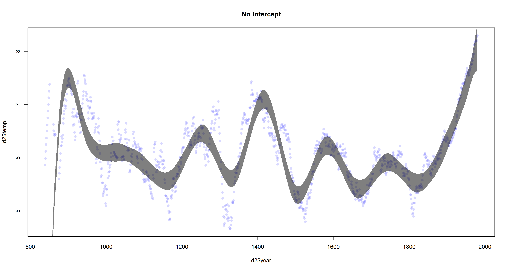

Chapter 04 (Extra Material)
Introduction
These are answers and solutions to additional exercises from previous versions of the end of chapter 4 in Satistical Rethinking 2 by Richard McElreath. I have created these notes as a part of my ongoing involvement in the AU Bayes Study Group. Much of my inspiration for these solutions, where necessary, has been obtained from Gregor Mathes.
Practice 1
Question: Refit model m4.3 from the chapter but omit the mean weight xbar. Compare the new model’s posterior to that of the original model. In particular, look at the covariance among the parameters. What is difference?
Answer:
Let’s firstly refit the model m4.3 using the code on pages 100 & 101:
library(rethinking)
data(Howell1)
d <- Howell1
d2 <- d[d$age >= 18, ]
# define the average weight, x-bar
xbar <- mean(d2$weight)
# fit original model
m4.3 <- quap(alist(
height ~ dnorm(mu, sigma),
mu <- a + b * (weight - xbar),
a ~ dnorm(178, 20),
b ~ dlnorm(0, 1),
sigma ~ dunif(0, 50)
), data = d2)
# fit reduced model
m4.3_reduced <- quap(alist(
height ~ dnorm(mu, sigma),
mu <- a + b * weight,
a ~ dnorm(178, 20),
b ~ dlnorm(0, 1),
sigma ~ dunif(0, 50)
), data = d2)
How do we compare these models and their posteriors? Here, I want to look at three things:
- Covariances between parameters estimates
round(vcov(m4.3), digits = 3)
## a b sigma
## a 0.073 0.000 0.000
## b 0.000 0.002 0.000
## sigma 0.000 0.000 0.037
round(vcov(m4.3_reduced), digits = 3)
## a b sigma
## a 3.601 -0.078 0.009
## b -0.078 0.002 0.000
## sigma 0.009 0.000 0.037
As we can see, the covariances increase quite a bit when omitting xbar and this not centring.
- Summaries of each parameter in the posterior
summary(extract.samples(m4.3))
## a b sigma
## Min. :153.6 Min. :0.7505 Min. :4.324
## 1st Qu.:154.4 1st Qu.:0.8738 1st Qu.:4.947
## Median :154.6 Median :0.9027 Median :5.076
## Mean :154.6 Mean :0.9023 Mean :5.076
## 3rd Qu.:154.8 3rd Qu.:0.9307 3rd Qu.:5.205
## Max. :155.7 Max. :1.0443 Max. :5.773
summary(extract.samples(m4.3_reduced))
## a b sigma
## Min. :108.2 Min. :0.7290 Min. :4.434
## 1st Qu.:113.2 1st Qu.:0.8632 1st Qu.:4.945
## Median :114.5 Median :0.8911 Median :5.071
## Mean :114.5 Mean :0.8911 Mean :5.072
## 3rd Qu.:115.8 3rd Qu.:0.9195 3rd Qu.:5.199
## Max. :121.7 Max. :1.0403 Max. :5.833
Between the two models, neither $\beta$ (b) nor $\sigma$ (sigma) differ greatly. However, our posterior estimate of $\alpha$ (a) is quite a bit lower in the reduced model than it is in the original model.
This is down to the interpretation of the $\alpha$ parameter itself. In the original model, $\alpha$ denotes the average height of a person at the mean weight in the data set. Since we removed the xbar component in the reduced model, $\alpha$ now identifies the average height of a person of weight $0kg$ - a nonsense metric.
- Predictions and Intervals
Here, I have written a function that takes a model object, data, and some additional arguments to automate plot generation:
plot.predictions <- function(X, Y, data, model, main) {
XOrig <- X
X <- data[, colnames(data) == X]
Y <- data[, colnames(data) == Y]
plot(Y ~ X, col = col.alpha(rangi2, 0.8), main = main)
# Estimate and plot the quap regression line and 97% HPDI for the mean
weight.seq <- seq(from = min(X), to = max(X), length.out = 1000)
predict_df <- data.frame(XOrig = weight.seq)
colnames(predict_df) <- XOrig
mu <- link(model, data = predict_df)
mu.mean <- apply(mu, 2, mean)
mu.HPDI <- apply(mu, 2, HPDI, prob = 0.97)
lines(weight.seq, mu.mean)
shade(mu.HPDI, weight.seq)
# Estimate and plot the 97% HPDI for the predicted heights
predict_ls <- list(weight = weight.seq)
names(predict_ls) <- XOrig
sim.height <- sim(model, data = predict_ls)
height.HPDI <- apply(sim.height, 2, HPDI, prob = 0.97)
shade(height.HPDI, weight.seq)
}
plot.predictions(X = "weight", Y = "height", data = d2, model = m4.3, main = "Original Model")
plot.predictions(X = "weight", Y = "height", data = d2, model = m4.3_reduced, main = "Reduced Model")
So. Does centring or not change the predictions of our model? No, it does not. At least in this case.
Practice 2
Question: In the chapter, we used 15 knots with the cherry blossom spline. Increase the number of knots and observe what happens to the resulting spline. Then adjust also the width of the prior on the weights - change the standard deviation of the prior and watch what happens. What do you think the combination of knot number and the prior on the weights controls?
Answer: Again, I start with code from the book - pages 118, 120 & 122 to be precise - and implement it into a function for easy changing of model specifications:
library(rethinking)
library(splines)
data(cherry_blossoms)
d <- cherry_blossoms
d2 <- d[complete.cases(d$temp), ] # complete cases on temp
cherry_spline <- function(n_Knots, StdV) {
# knot list
knot_list <- quantile(d2$year, probs = seq(0, 1, length.out = n_Knots))[-c(1, n_Knots)]
# basis function
B <- bs(d2$year,
knots = knot_list,
degree = 3, intercept = TRUE
)
# Run quap model
m4.7 <- quap(alist(
T ~ dnorm(mu, sigma),
mu <- a + B %*% w,
a ~ dnorm(6, 10),
w ~ dnorm(0, StdV),
sigma ~ dexp(1)
),
data = list(T = d2$temp, B = B, StdV = StdV),
start = list(w = rep(0, ncol(B)))
)
# get 97% posterior interval for mean and plot
mu <- link(m4.7)
mu_PI <- apply(mu, 2, PI, 0.97)
plot(d2$year, d2$temp,
col = col.alpha(rangi2, 0.3), pch = 16,
main = paste("Knots:", n_Knots, "-", "Prior Weight:", StdV)
)
shade(mu_PI, d2$year, col = col.alpha("black", 0.5))
}
Let’s start by increasing the number of knots:
cherry_spline(n_Knots = 15, StdV = 1)
cherry_spline(n_Knots = 20, StdV = 1)
cherry_spline(n_Knots = 30, StdV = 1)
The more knots we use, the more flexible the resulting function becomes. It fits the data better, but might overfit if we try to do predictions.
Now, we change the prior weights:
cherry_spline(n_Knots = 15, StdV = 1) # base standard deviation
cherry_spline(n_Knots = 15, StdV = .1) # decreased standard deviation
cherry_spline(n_Knots = 15, StdV = 100) # increased standard deviation
As I decrease the standard deviation for the prior or the weights, I see that the resulting function becomes less flexible. I expected our function to become less flexible as I lower the StdV parameter since a lower standard deviation here will increase the weights and thus give each base function more of say in determining the overall function globally, making the result smoother.
Practice 3
Question: Return to data(cherry_blossoms) and model the association between blossom date (doy) and March temperature (temp). Note that there are many missing values in both variables. You may consider a linear model, a polynomial, or a spline on temperature. How well does temperature rend predict the blossom trend?
Answer:
library(rethinking)
library(splines)
data(cherry_blossoms)
d <- cherry_blossoms[, 2:3]
d2 <- na.omit(d)
d2$temps <- scale(d2$temp)
with(d2, plot(temps, doy,
xlab = "Centred Temperature in March", ylab = "Day in Year"
))
There is a seemingly negative relationship here, but there is also a lot of noise. I expect polynomial or spline approaches to capture too much of that noise and opt for a simple linear regression instead:
# define average temp
xbar <- mean(d2$temp)
# fit modell
cherry_linear <- quap(
alist(
doy ~ dnorm(mu, sigma),
mu <- a + b * (temp - xbar),
a ~ dnorm(115, 30),
b ~ dnorm(-2, 5),
sigma ~ dunif(0, 50)
),
data = d2
)
# output
precis(cherry_linear)
## mean sd 5.5% 94.5%
## a 104.921713 0.2106637 104.585032 105.258394
## b -2.990211 0.3078719 -3.482249 -2.498172
## sigma 5.910003 0.1489654 5.671927 6.148078
With average temperatures in March, cherries blossom on day 105 of the year. With every increase of 1°C in temperature in March, cherries blossom - on average - 3 earlier. Our PI shows that we are pretty certain of this relationship. Let’s plot this to finish:
plot.predictions(X = "temp", Y = "doy", data = d2, model = cherry_linear, main = "Cherry Blossoms")
Off, that’s quite some uncertainty there. I guess we aren’t doing a tremendous job at predicting cherry blossom dates depending on temperature in March with this model.
Practice 4
Question: Simulate the prior predictive distribution for the cherry blossom spline in the chapter. Adjust the prior on the weights and observe what happens. What do you think the prior on the weight is doing?
Answer:
I haven’t solved this myself (yet). In the meantime, you can consult the answer provided by Gregor Mathes.
Practice 5
Question: The cherry blossom spline in the chapter used an intercept a, but technically it doesn’t require one. The first basis function could substitute for the intercept. Try refitting the cherry blossom spline without the intercept. What else about the model do you need to change to make this work?
Answer:
library(rethinking)
library(splines)
data(cherry_blossoms)
d <- cherry_blossoms
d2 <- d[complete.cases(d$temp), ] # complete cases on temp
n_Knots <- 15
# knot list
knot_list <- quantile(d2$year, probs = seq(0, 1, length.out = n_Knots))[-c(1, n_Knots)]
# basis function
B <- bs(d2$year,
knots = knot_list,
degree = 3, intercept = FALSE
)
# Run quap model
m4.7 <- quap(alist(
T ~ dnorm(mu, sigma),
mu <- B %*% w,
a ~ dnorm(6, 10),
w ~ dnorm(0, 1),
sigma ~ dexp(1)
),
data = list(T = d2$temp, B = B),
start = list(w = rep(0, ncol(B)))
)
# get 97% posterior interval for mean and plot
mu <- link(m4.7)
mu_PI <- apply(mu, 2, PI, 0.97)
plot(d2$year, d2$temp,
col = col.alpha(rangi2, 0.3), pch = 16,
main = "No Intercept"
)
shade(mu_PI, d2$year, col = col.alpha("black", 0.5))

We need to change the deterministic formula in the model as well as the creation of basis functions by setting Intercept = FALSE in the bs() function call.
Session Info
sessionInfo()
## R version 4.0.5 (2021-03-31)
## Platform: x86_64-w64-mingw32/x64 (64-bit)
## Running under: Windows 10 x64 (build 19043)
##
## Matrix products: default
##
## locale:
## [1] LC_COLLATE=English_United Kingdom.1252 LC_CTYPE=English_United Kingdom.1252 LC_MONETARY=English_United Kingdom.1252 LC_NUMERIC=C
## [5] LC_TIME=English_United Kingdom.1252
##
## attached base packages:
## [1] splines parallel stats graphics grDevices utils datasets methods base
##
## other attached packages:
## [1] rethinking_2.13 rstan_2.21.2 ggplot2_3.3.6 StanHeaders_2.21.0-7
##
## loaded via a namespace (and not attached):
## [1] Rcpp_1.0.7 mvtnorm_1.1-1 lattice_0.20-41 prettyunits_1.1.1 ps_1.6.0 assertthat_0.2.1 digest_0.6.27 utf8_1.2.1 V8_3.4.1 R6_2.5.0
## [11] backports_1.2.1 stats4_4.0.5 evaluate_0.14 coda_0.19-4 highr_0.9 blogdown_1.3 pillar_1.6.0 rlang_0.4.11 curl_4.3.2 callr_3.7.0
## [21] jquerylib_0.1.4 R.utils_2.10.1 R.oo_1.24.0 rmarkdown_2.7 styler_1.4.1 stringr_1.4.0 loo_2.4.1 munsell_0.5.0 compiler_4.0.5 xfun_0.22
## [31] pkgconfig_2.0.3 pkgbuild_1.2.0 shape_1.4.5 htmltools_0.5.1.1 tidyselect_1.1.0 tibble_3.1.1 gridExtra_2.3 bookdown_0.22 codetools_0.2-18 matrixStats_0.61.0
## [41] fansi_0.4.2 crayon_1.4.1 dplyr_1.0.5 withr_2.4.2 MASS_7.3-53.1 R.methodsS3_1.8.1 grid_4.0.5 jsonlite_1.7.2 gtable_0.3.0 lifecycle_1.0.0
## [51] DBI_1.1.1 magrittr_2.0.1 scales_1.1.1 RcppParallel_5.1.2 cli_3.0.0 stringi_1.5.3 bslib_0.2.4 ellipsis_0.3.2 generics_0.1.0 vctrs_0.3.7
## [61] rematch2_2.1.2 tools_4.0.5 R.cache_0.14.0 glue_1.4.2 purrr_0.3.4 processx_3.5.1 yaml_2.2.1 inline_0.3.17 colorspace_2.0-0 knitr_1.33
## [71] sass_0.3.1